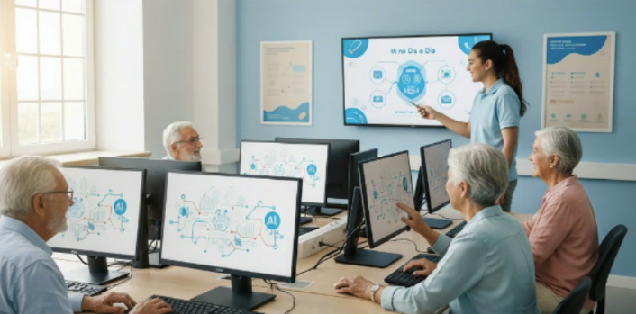

Nossos programas aproximam pessoas com idade acima de 60 anos das tecnologias digitais, promovendo aprendizado prático e socialização.
Os projetos são elaborados por profissionais e voluntários que acreditam que a tecnologia pode ser uma aliada na qualidade de vida.
Além de ensinar o uso de ferramentas tecnológicas, nossas iniciativas incentivam a autonomia digital e a troca entre gerações.
Valorizamos a experiência de vida de cada participante, transformando o aprendizado em um espaço de convivência, descoberta e acolhimento.
Acreditamos que a inclusão digital vai muito além do domínio de dispositivos — ela representa uma oportunidade de fortalecimento emocional,
reconexão com amigos e familiares e o resgate da confiança em explorar o mundo moderno de forma segura.
A Digitalidade 60+ atua em comunidades, centros de convivência e espaços públicos, oferecendo aulas gratuitas e personalizadas.
Além disso, buscamos parcerias com empresas e escolas para ampliar o alcance das nossas atividades.
Oficina de Smartphones
Adultos da melhor idade aprendendo a usar o celular com instrutores voluntários.
Nessa oficina, os participantes aprendem desde o básico – como configurar o celular, conectar-se ao Wi-Fi e enviar mensagens –
até funções mais avançadas, como chamadas de vídeo, uso de aplicativos bancários e segurança digital.
Duplas Digitais
Jovens e adultos 60+ trocando experiências sobre tecnologia.
O projeto "Duplas Digitais" une gerações. Jovens voluntários acompanham adultos 60+ em sessões semanais,
ensinando o uso de redes sociais, plataformas de mensagens e aplicativos de vídeo.
É um espaço de aprendizado mútuo e convivência afetiva.
IA no Dia a Dia

Participantes aprendendo sobre assistentes virtuais e ferramentas digitais.
Este curso introdutório apresenta as principais ferramentas de Inteligência Artificial e assistentes virtuais.
De forma simples, mostramos como usar comandos de voz, aplicativos inteligentes e sistemas que podem facilitar a rotina doméstica e de comunicação.
Como participar
Você pode participar de várias formas: como voluntário, doador ou aluno das oficinas.
Todas as contribuições ajudam a expandir o impacto social da ONG.
Voluntários podem atuar em aulas, suporte técnico ou comunicação digital.
As doações são utilizadas para compra de tablets, manutenção de equipamentos e produção de material didático.